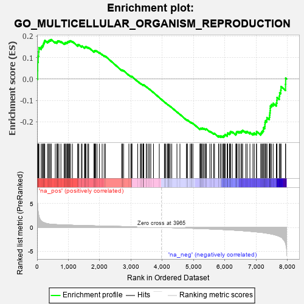
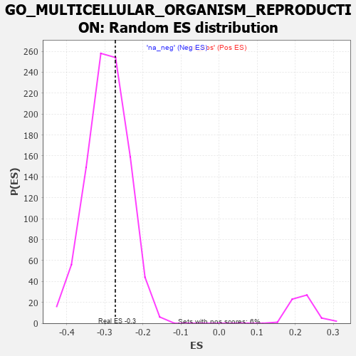

| | | Dataset | 7d |
| Phenotype | NoPhenotypeAvailable |
| Upregulated in class | na_neg |
| GeneSet | GO_MULTICELLULAR_ORGANISM_REPRODUCTION |
| Enrichment Score (ES) | -0.27247187 |
| Normalized Enrichment Score (NES) | -0.93052536 |
| Nominal p-value | 0.64225054 |
| FDR q-value | 0.92720884 |
| FWER p-Value | 1.0 |
Table: GSEA Results Summary

Fig 1: Enrichment plot: GO_MULTICELLULAR_ORGANISM_REPRODUCTION
Profile of the Running ES Score & Positions of GeneSet Members on the Rank Ordered List
| PROBE | GENE SYMBOL | GENE_TITLE | RANK IN GENE LIST | RANK METRIC SCORE | RUNNING ES | CORE ENRICHMENT | | 1 | HMX3 | | | 17 | 4.775 | 0.0386 | No |
| 2 | H2AX | | | 20 | 4.738 | 0.0787 | No |
| 3 | SPO11 | | | 35 | 3.371 | 0.1057 | No |
| 4 | TGFB3 | | | 49 | 2.654 | 0.1267 | No |
| 5 | MAST2 | | | 59 | 2.459 | 0.1465 | No |
| 6 | SP3 | | | 131 | 1.391 | 0.1492 | No |
| 7 | TEX14 | | | 164 | 1.179 | 0.1552 | No |
| 8 | TPPP3 | | | 195 | 1.079 | 0.1606 | No |
| 9 | SPDYA | | | 211 | 1.026 | 0.1674 | No |
| 10 | SMAD5 | | | 231 | 0.979 | 0.1733 | No |
| 11 | CIP2A | | | 246 | 0.945 | 0.1796 | No |
| 12 | WEE2 | | | 333 | 0.766 | 0.1751 | No |
| 13 | LARP7 | | | 369 | 0.731 | 0.1768 | No |
| 14 | BAX | | | 387 | 0.711 | 0.1807 | No |
| 15 | MLH1 | | | 423 | 0.679 | 0.1820 | No |
| 16 | ERCC1 | | | 453 | 0.660 | 0.1839 | No |
| 17 | CCNB1 | | | 581 | 0.601 | 0.1727 | No |
| 18 | AURKC | | | 633 | 0.583 | 0.1712 | No |
| 19 | MCM8 | | | 646 | 0.578 | 0.1746 | No |
| 20 | PARN | | | 660 | 0.572 | 0.1778 | No |
| 21 | FST | | | 698 | 0.560 | 0.1778 | No |
| 22 | TDRD9 | | | 761 | 0.542 | 0.1745 | No |
| 23 | ASF1B | | | 863 | 0.515 | 0.1659 | No |
| 24 | HMGB2 | | | 892 | 0.507 | 0.1666 | No |
| 25 | NSUN2 | | | 901 | 0.506 | 0.1699 | No |
| 26 | TDRD7 | | | 936 | 0.498 | 0.1698 | No |
| 27 | RNF17 | | | 965 | 0.491 | 0.1704 | No |
| 28 | WDR48 | | | 975 | 0.489 | 0.1734 | No |
| 29 | MEN1 | | | 1003 | 0.483 | 0.1741 | No |
| 30 | REC8 | | | 1028 | 0.478 | 0.1751 | No |
| 31 | AKT1 | | | 1040 | 0.476 | 0.1777 | No |
| 32 | NDRG3 | | | 1068 | 0.470 | 0.1783 | No |
| 33 | SRC | | | 1128 | 0.459 | 0.1746 | No |
| 34 | SCMH1 | | | 1300 | 0.428 | 0.1563 | No |
| 35 | FKBP6 | | | 1301 | 0.428 | 0.1600 | No |
| 36 | UBR2 | | | 1334 | 0.423 | 0.1595 | No |
| 37 | P2RY1 | | | 1416 | 0.407 | 0.1525 | No |
| 38 | DDX4 | | | 1436 | 0.403 | 0.1535 | No |
| 39 | INHBB | | | 1514 | 0.388 | 0.1470 | No |
| 40 | TDRD5 | | | 1528 | 0.387 | 0.1486 | No |
| 41 | SOS1 | | | 1547 | 0.384 | 0.1496 | No |
| 42 | BOLL | | | 1561 | 0.381 | 0.1512 | No |
| 43 | KDM1B | | | 1618 | 0.371 | 0.1471 | No |
| 44 | RXRA | | | 1647 | 0.365 | 0.1467 | No |
| 45 | MSH2 | | | 1819 | 0.334 | 0.1276 | No |
| 46 | SGPL1 | | | 1820 | 0.334 | 0.1304 | No |
| 47 | TDRKH | | | 1836 | 0.331 | 0.1313 | No |
| 48 | SMAD4 | | | 1860 | 0.326 | 0.1311 | No |
| 49 | NUP62 | | | 1871 | 0.324 | 0.1326 | No |
| 50 | DDX6 | | | 1915 | 0.318 | 0.1298 | No |
| 51 | GPX4 | | | 1989 | 0.306 | 0.1231 | No |
| 52 | KDM3A | | | 2078 | 0.294 | 0.1143 | No |
| 53 | PSME4 | | | 2143 | 0.285 | 0.1085 | No |
| 54 | UBE2A | | | 2183 | 0.278 | 0.1059 | No |
| 55 | MARF1 | | | 2704 | 0.198 | 0.0408 | No |
| 56 | HAS1 | | | 2722 | 0.195 | 0.0403 | No |
| 57 | SLIT2 | | | 2724 | 0.195 | 0.0419 | No |
| 58 | TTLL1 | | | 2764 | 0.189 | 0.0385 | No |
| 59 | ACVR1 | | | 2932 | 0.161 | 0.0184 | No |
| 60 | AZIN2 | | | 2993 | 0.150 | 0.0120 | No |
| 61 | WNT4 | | | 3023 | 0.146 | 0.0095 | No |
| 62 | BRCA2 | | | 3024 | 0.146 | 0.0108 | No |
| 63 | BRDT | | | 3028 | 0.145 | 0.0116 | No |
| 64 | PRDX4 | | | 3214 | 0.120 | -0.0111 | No |
| 65 | ASZ1 | | | 3299 | 0.106 | -0.0210 | No |
| 66 | TDRD1 | | | 3321 | 0.101 | -0.0228 | No |
| 67 | SMAD1 | | | 3337 | 0.099 | -0.0239 | No |
| 68 | PPAT | | | 3382 | 0.091 | -0.0287 | No |
| 69 | DDX3X | | | 3388 | 0.091 | -0.0286 | No |
| 70 | GAS2 | | | 3392 | 0.090 | -0.0282 | No |
| 71 | TUT4 | | | 3394 | 0.090 | -0.0276 | No |
| 72 | TESK2 | | | 3401 | 0.089 | -0.0276 | No |
| 73 | MED1 | | | 3405 | 0.089 | -0.0272 | No |
| 74 | GLI1 | | | 3489 | 0.079 | -0.0372 | No |
| 75 | TBP | | | 3493 | 0.078 | -0.0369 | No |
| 76 | DMRT1 | | | 3546 | 0.068 | -0.0430 | No |
| 77 | MAPK3 | | | 3589 | 0.062 | -0.0479 | No |
| 78 | ACSL4 | | | 3632 | 0.055 | -0.0528 | No |
| 79 | HSF1 | | | 3718 | 0.039 | -0.0634 | No |
| 80 | JAG2 | | | 3903 | 0.010 | -0.0869 | No |
| 81 | ROBO2 | | | 4066 | -0.018 | -0.1075 | No |
| 82 | DDX20 | | | 4083 | -0.021 | -0.1094 | No |
| 83 | MTOR | | | 4114 | -0.025 | -0.1130 | No |
| 84 | MCM9 | | | 4163 | -0.036 | -0.1189 | No |
| 85 | MSH4 | | | 4176 | -0.038 | -0.1201 | No |
| 86 | GGT7 | | | 4200 | -0.041 | -0.1227 | No |
| 87 | TAF7L | | | 4205 | -0.042 | -0.1228 | No |
| 88 | DDX3Y | | | 4219 | -0.045 | -0.1241 | No |
| 89 | PAX5 | | | 4255 | -0.051 | -0.1282 | No |
| 90 | HERC2 | | | 4302 | -0.060 | -0.1336 | No |
| 91 | LRRK2 | | | 4467 | -0.087 | -0.1539 | No |
| 92 | BAG6 | | | 4563 | -0.108 | -0.1651 | No |
| 93 | POC1A | | | 4768 | -0.151 | -0.1900 | No |
| 94 | PLD6 | | | 4799 | -0.157 | -0.1925 | No |
| 95 | TPPP2 | | | 4800 | -0.157 | -0.1912 | No |
| 96 | SLIT3 | | | 4890 | -0.175 | -0.2011 | No |
| 97 | ATRX | | | 4929 | -0.184 | -0.2044 | No |
| 98 | FZD4 | | | 4940 | -0.186 | -0.2041 | No |
| 99 | OSBP2 | | | 4978 | -0.193 | -0.2072 | No |
| 100 | ASH1L | | | 5203 | -0.248 | -0.2339 | No |
| 101 | ATM | | | 5210 | -0.249 | -0.2325 | No |
| 102 | TOP2A | | | 5216 | -0.250 | -0.2310 | No |
| 103 | TMF1 | | | 5225 | -0.251 | -0.2299 | No |
| 104 | PTEN | | | 5262 | -0.261 | -0.2323 | No |
| 105 | PICK1 | | | 5265 | -0.263 | -0.2303 | No |
| 106 | CELF4 | | | 5275 | -0.266 | -0.2292 | No |
| 107 | CD9 | | | 5319 | -0.277 | -0.2323 | No |
| 108 | TOB2 | | | 5337 | -0.282 | -0.2321 | No |
| 109 | GRIN1 | | | 5381 | -0.291 | -0.2351 | No |
| 110 | PRDX3 | | | 5389 | -0.293 | -0.2335 | No |
| 111 | SOX8 | | | 5404 | -0.296 | -0.2328 | No |
| 112 | VDR | | | 5517 | -0.325 | -0.2444 | No |
| 113 | FOLR2 | | | 5563 | -0.336 | -0.2473 | No |
| 114 | ASPM | | | 5637 | -0.358 | -0.2536 | No |
| 115 | MEIOB | | | 5667 | -0.366 | -0.2542 | No |
| 116 | ADA | | | 5798 | -0.405 | -0.2675 | No |
| 117 | BBS4 | | | 5806 | -0.407 | -0.2649 | No |
| 118 | MEIG1 | | | 5866 | -0.423 | -0.2688 | Yes |
| 119 | CDK16 | | | 5869 | -0.425 | -0.2655 | Yes |
| 120 | STK11 | | | 5922 | -0.443 | -0.2684 | Yes |
| 121 | AGFG1 | | | 5955 | -0.457 | -0.2686 | Yes |
| 122 | PRDM1 | | | 5956 | -0.457 | -0.2647 | Yes |
| 123 | MORN2 | | | 5981 | -0.465 | -0.2638 | Yes |
| 124 | TUT7 | | | 5997 | -0.471 | -0.2617 | Yes |
| 125 | PTPRN | | | 6007 | -0.474 | -0.2588 | Yes |
| 126 | USP9Y | | | 6075 | -0.498 | -0.2632 | Yes |
| 127 | CALR | | | 6077 | -0.499 | -0.2590 | Yes |
| 128 | PLK1 | | | 6082 | -0.500 | -0.2553 | Yes |
| 129 | UBB | | | 6090 | -0.503 | -0.2519 | Yes |
| 130 | RNF8 | | | 6147 | -0.518 | -0.2546 | Yes |
| 131 | EGR1 | | | 6165 | -0.527 | -0.2523 | Yes |
| 132 | GOPC | | | 6167 | -0.528 | -0.2480 | Yes |
| 133 | THRB | | | 6178 | -0.531 | -0.2447 | Yes |
| 134 | RGN | | | 6233 | -0.547 | -0.2470 | Yes |
| 135 | IFT27 | | | 6348 | -0.596 | -0.2565 | Yes |
| 136 | ARMC2 | | | 6363 | -0.602 | -0.2532 | Yes |
| 137 | BIRC3 | | | 6366 | -0.603 | -0.2483 | Yes |
| 138 | BBS2 | | | 6383 | -0.608 | -0.2452 | Yes |
| 139 | HERC4 | | | 6429 | -0.631 | -0.2455 | Yes |
| 140 | CELF3 | | | 6475 | -0.651 | -0.2458 | Yes |
| 141 | ACE | | | 6526 | -0.674 | -0.2464 | Yes |
| 142 | M1AP | | | 6537 | -0.680 | -0.2419 | Yes |
| 143 | MYCBP | | | 6566 | -0.693 | -0.2396 | Yes |
| 144 | TMED2 | | | 6665 | -0.746 | -0.2458 | Yes |
| 145 | EGFR | | | 6708 | -0.765 | -0.2447 | Yes |
| 146 | TBPL1 | | | 6798 | -0.814 | -0.2491 | Yes |
| 147 | HEXB | | | 6894 | -0.864 | -0.2540 | Yes |
| 148 | GHSR | | | 6937 | -0.894 | -0.2517 | Yes |
| 149 | PACRG | | | 7007 | -0.940 | -0.2526 | Yes |
| 150 | DZIP1 | | | 7009 | -0.940 | -0.2447 | Yes |
| 151 | CFTR | | | 7143 | -1.030 | -0.2529 | Yes |
| 152 | AR | | | 7169 | -1.046 | -0.2472 | Yes |
| 153 | CETN2 | | | 7200 | -1.070 | -0.2420 | Yes |
| 154 | LRGUK | | | 7229 | -1.101 | -0.2362 | Yes |
| 155 | RSPH1 | | | 7231 | -1.101 | -0.2269 | Yes |
| 156 | QKI | | | 7272 | -1.145 | -0.2223 | Yes |
| 157 | IFT81 | | | 7277 | -1.151 | -0.2129 | Yes |
| 158 | CIB1 | | | 7280 | -1.152 | -0.2034 | Yes |
| 159 | SYCP1 | | | 7295 | -1.167 | -0.1952 | Yes |
| 160 | SPAG8 | | | 7337 | -1.211 | -0.1901 | Yes |
| 161 | OVOL1 | | | 7341 | -1.214 | -0.1802 | Yes |
| 162 | SPEF2 | | | 7418 | -1.289 | -0.1789 | Yes |
| 163 | SPAG6 | | | 7426 | -1.302 | -0.1687 | Yes |
| 164 | MMP19 | | | 7433 | -1.309 | -0.1583 | Yes |
| 165 | CASP2 | | | 7442 | -1.322 | -0.1481 | Yes |
| 166 | GGT1 | | | 7447 | -1.329 | -0.1372 | Yes |
| 167 | RAI14 | | | 7450 | -1.337 | -0.1261 | Yes |
| 168 | XRN2 | | | 7488 | -1.384 | -0.1190 | Yes |
| 169 | IQCG | | | 7541 | -1.455 | -0.1133 | Yes |
| 170 | MNS1 | | | 7642 | -1.633 | -0.1122 | Yes |
| 171 | TEKT3 | | | 7658 | -1.657 | -0.1000 | Yes |
| 172 | CNBD2 | | | 7663 | -1.670 | -0.0862 | Yes |
| 173 | PANK2 | | | 7736 | -1.866 | -0.0796 | Yes |
| 174 | CASP3 | | | 7747 | -1.902 | -0.0646 | Yes |
| 175 | SYNE1 | | | 7782 | -2.011 | -0.0518 | Yes |
| 176 | NPHP1 | | | 7791 | -2.041 | -0.0354 | Yes |
| 177 | ARRB1 | | | 7935 | -3.377 | -0.0250 | Yes |
| 178 | WDR33 | | | 7939 | -3.452 | 0.0041 | Yes |
Table: GSEA details [plain text format]

Fig 2: GO_MULTICELLULAR_ORGANISM_REPRODUCTION: Random ES distribution
Gene set null distribution of ES for GO_MULTICELLULAR_ORGANISM_REPRODUCTION